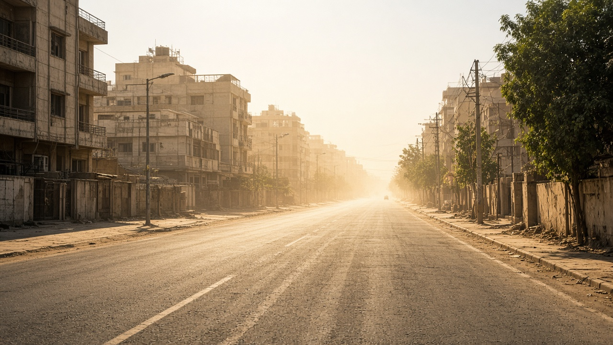
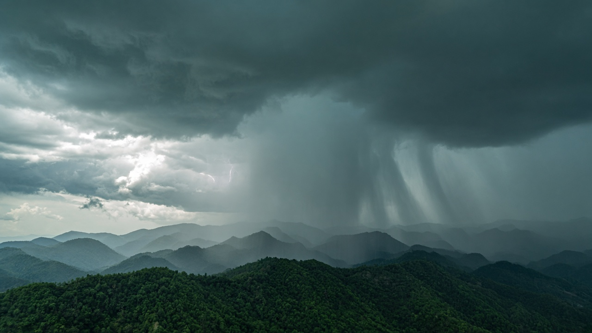
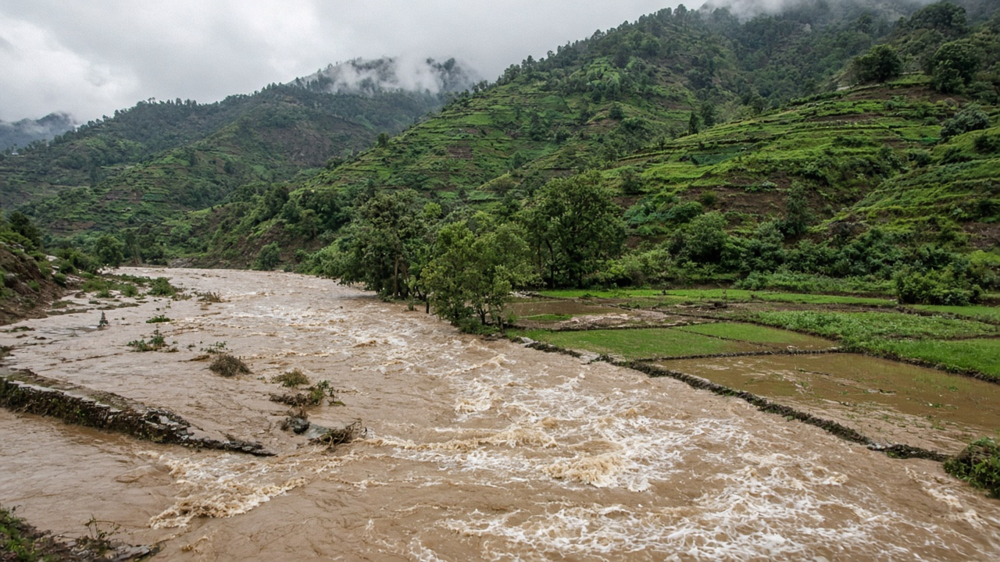

Extreme Weather Events (Heatwaves, Storms, Floods)
Published on July 13, 2026

Climate change is increasing the frequency and intensity of many extreme weather events, though not every individual storm or heatwave can be attributed solely to warming. Higher global temperatures raise the probability of record-breaking heatwaves, extend fire seasons, and allow the atmosphere to hold more moisture, which can fuel heavier rainfall and flooding when conditions align. Attribution science uses models and observations to estimate how much more likely or intense a specific event became because of human-caused climate change, helping societies understand risk in a warming world.
Heatwaves pose direct threats to human health, especially for elderly populations, outdoor workers, and residents of cities where concrete and asphalt amplify temperatures through the urban heat island effect. Tropical cyclones may not increase in total number globally, but many studies suggest a trend toward stronger storms and greater rainfall rates. Monsoon variability affects South Asia profoundly, with some regions experiencing intense downpours and landslides while others face delayed rains or prolonged dry spells. Flash floods in mountain catchments can devastate communities within hours, underscoring the need for early warning and land-use planning that keeps people out of high-hazard zones.
Reducing harm from extreme weather requires both mitigation and adaptation. Cutting emissions limits how much worse extremes may become, while resilient infrastructure, heat action plans, improved forecasting, and ecosystem-based flood management protect lives today. Insurance, social safety nets, and building codes that account for future climate conditions help spread risk fairly. Public communication that distinguishes long-term trends from daily weather reduces confusion and builds trust. As extremes become more newsworthy and costly, integrating climate science into disaster preparedness is no longer optional for governments, businesses, and communities worldwide.

जलवायु परिवर्तनले धेरै चरम मौसम घटनाको आवृत्ति र तीव्रता बढाइरहेको छ, यद्यपि प्रत्येक व्यक्तिगत आँधी वा अत्यधिक गर्मीको लहर मात्र तापक्रम वृद्धिको कारण भन्न सकिँदैन। उच्च विश्वव्यापी तापक्रमले रेकर्ड तोड्ने गर्मीको सम्भावना बढाउँछ, आगो लाग्ने मौसम लम्ब्याउँछ र वायुमण्डलले बढी नमी समात्न दिन्छ, जसले उपयुक्त अवस्थामा भारी वर्षा र बाढी बढाउन सक्छ। घटना आरोपण विज्ञानले मोडेल र अवलोकन प्रयोग गरी मानव-जन्य जलवायु परिवर्तनले कुनै विशेष घटना कति बढी सम्भाव्य वा तीव्र बनायो भनेर अनुमान लगाउँछ, जसले समाजहरूलाई तातो हुँदै गरेको संसारमा जोखिम बुझ्न मद्दत गर्दछ।
अत्यधिक गर्मीको लहरले मानव स्वास्थ्यमा प्रत्यक्ष खतरा निम्त्याउँछ, विशेष गरी वृद्ध, बाहिर काम गर्ने र कंक्रिट-डामरले शहरी ताप द्वीप प्रभाव मार्फत तापक्रम बढाउने सहरका बासिन्दाहरूका लागि। उष्णकटिबंधीय चक्रवातको कुल संख्या विश्वव्यापी रूपमा नबढ्न सक्छ, तर धेरै अध्ययनले बलियो आँधी र बढी वर्षा दरतर्फ प्रवृत्ति देखाउँछन्। मनसुनको परिवर्तनशीलताले दक्षिण एसियालाई गहन रूपमा प्रभाव पार्छ, केही क्षेत्रमा तीव्र वर्षा र पहिरो हुँदा अन्यमा ढिलो वर्षा वा लामो सुख्खा पर्छ। पहाडी जलग्रहण क्षेत्रमा अचानक बाढीले केही घण्टामै समुदाय नष्ट पार्न सक्छ, जसले प्रारम्भिक चेतावनी र उच्च-जोखिम क्षेत्रबाट मानिसलाई टाढा राख्ने भू-उपयोग योजनाको आवश्यकता देखाउँछ।
चरम मौसमबाट हुने हानि घटाउन न्यूनीकरण र अनुकूलन दुवै आवश्यक छ। उत्सर्जन कटौतीले चरमता कति बढ्न सक्छ भन्ने सीमा तोकेको छ, भने लचिलो पूर्वाधार, गर्मी कार्य योजना, सुधारिएको पूर्वानुमान र पारिस्थितिकी-आधारित बाढी व्यवस्थापनले आज जीवन बचाउँछ। बीमा, सामाजिक सुरक्षा जाल र भविष्यका जलवायु अवस्था सोचेर बनाइएका निर्माण मापदण्डले जोखिम न्यायसंगत रूपमा बाँड्न मद्दत गर्छ। दीर्घकालीन प्रवृत्ति र दैनिक मौसम छुट्याउने सार्वजनिक सञ्चारले भ्रम घटाउँछ र विश्वास बढाउँछ। चरम घटना बढी समाचार र महँगो हुँदै जाँदा, आपदा तयारीमा जलवायु विज्ञान समावेश गर्नु विश्वभरका सरकार, व्यवसाय र समुदायका लागि वैकल्पिक रहेन।

जलवायु परिवर्तन कई चरम मौसम घटनाओं की आवृत्ति और तीव्रता बढ़ा रहा है, हालाँकि हर व्यक्तिगत तूफान या अत्यधिक गर्मी की लहर को केवल गर्मी के कारण नहीं ठहराया जा सकता। उच्च वैश्विक तापमान रिकॉर्ड तोड़ने वाली गर्मी की संभावना बढ़ाता है, आग लगने के मौसम को लंबा करता है और वायुमंडल को अधिक नमी रखने देता है, जिससे उपयुक्त परिस्थितियों में भारी वर्षा और बाढ़ बढ़ सकती है। घटना आरोपण विज्ञान मॉडल और अवलोकनों से अनुमान लगाती है कि मानव-जन्य जलवायु परिवर्तन से कोई विशेष घटना कितनी अधिक संभावित या तीव्र हुई, जिससे समाज गर्म होते संसार में जोखिम समझ सकें।
अत्यधिक गर्मी की लहर मानव स्वास्थ्य के लिए सीधा खतरा पैदा करती है, विशेष रूप से बुजुर्गों, बाहरी कर्मचारियों और उन शहरों के निवासियों के लिए जहाँ कंक्रिट-डामर शहरी ताप द्वीप प्रभाव से तापमान बढ़ाते हैं। उष्णकटिबंधीय चक्रवात की कुल संख्या वैश्विक रूप से न बढ़ सकती है, लेकिन कई अध्ययन मजबूत तूफान और अधिक वर्षा दर की ओर प्रवृत्ति दर्शाते हैं। मानसून की परिवर्तनशीलता दक्षिण एशिया को गहराई से प्रभावित करती है, कुछ क्षेत्रों में तीव्र वर्षा और भू-स्खलन होता है जबकि अन्य में देर से बारिश या लंबा सूखा पड़ता है। पहाड़ी जलग्रहण क्षेत्र में अचानक बाढ़ कुछ घंटों में समुदायों को तबाह कर सकती है, जो प्रारंभिक चेतावनी और उच्च-जोखिम क्षेत्रों से लोगों को दूर रखने वाली भू-उपयोग योजना की आवश्यकता दर्शाता है।
चरम मौसम से होने वाले नुकसान को कम करने के लिए शमन और अनुकूलन दोनों आवश्यक हैं। उत्सर्जन कम करने से चरमता कितनी बढ़ सकती है, उसकी सीमा तय होती है, जबकि लचीला बुनियादी ढाँचा, गर्मी कार्य योजना, बेहतर पूर्वानुमान और पारिस्थितिकी-आधारित बाढ़ प्रबंधन आज जीवन बचाते हैं। बीमा, सामाजिक सुरक्षा जाल और भविष्य की जलवायु परिस्थितियों को ध्यान में रखकर बने निर्माण मानक जोखिम को न्यायसंगत रूप से बाँटते हैं। दीर्घकालिक रुझान और दैनिक मौसम में अंतर बताने वाला सार्वजनिक संचार भ्रम कम करता है और विश्वास बढ़ाता है। चरम घटनाएँ अधिक समाचार योग्य और महँगी होती जा रही हैं, इसलिए आपदा तैयारी में जलवायु विज्ञान को शामिल करना दुनिया भर की सरकारों, व्यवसायों और समुदायों के लिए वैकल्पिक नहीं रह गया।